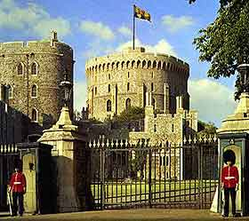

|
Windsor
Castle

Known as one of the primary residences of the English monarch, Windsor
castle plays hosts to many different ghosts some of which include:
Elizabeth I- Her spirit has been seen by many (including members of the
current royal family) in the Royal Library. The sound of her high heels
are heard on bare floorboards, people have seen her walk through the
library and into an inner room.
George III- For the last 10 years of his reign, George III was often
confined due to bouts of insanity, his face is often seen with sad
features looking out of the window where he was confined.
King Henry VIII- has been seen walking the hallways of Windsor castle.
His footsteps, along with agonizing moans, have been heard by many
guests of the castle.
King Charles I- has also been seen in the royal library as well as in
the Canon's house. Even though he was beheaded his spirit appears
whole, it is said that his apparition looks exactly like his portraits.
In 1873, a night-time visitor to the castle noticed an interesting new
statuary group had been erected near St. George's Chapel: three
standing figures, all in black, and a fourth crouching down. The
central standing character was in the act of striking with a large
sword. The sentry knew nothing of this artwork and when the visitor
returned to re-examine it, it had gone!
Herne the Hunter became the favorite huntsman of King Richard II when
he saved the monarch from being mauled to death by a cornered stag.
Being wounded in the process, he was later healed through witchcraft
and the wearing of the stag’s antlers. Unfortunately though, his
subsequent friendship with the King and skill in the field, bred
jealousy in his colleagues and he was framed for theft. Shame led him
to hang himself on 'Herne's Oak in the Home Park and, with a Wild Hunt,
his spirit has since been seen many times careering across the Great
Park searching for lost souls.
Bill Shaw (bigbill@theshadowlands.net)
|